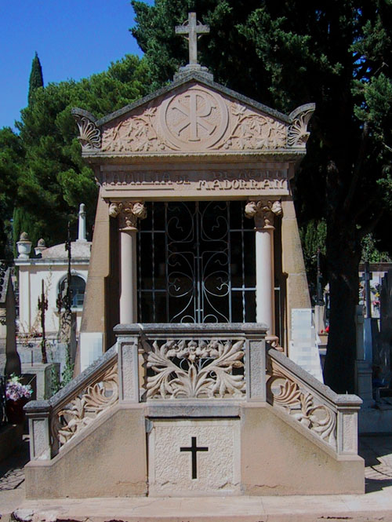
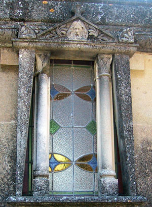
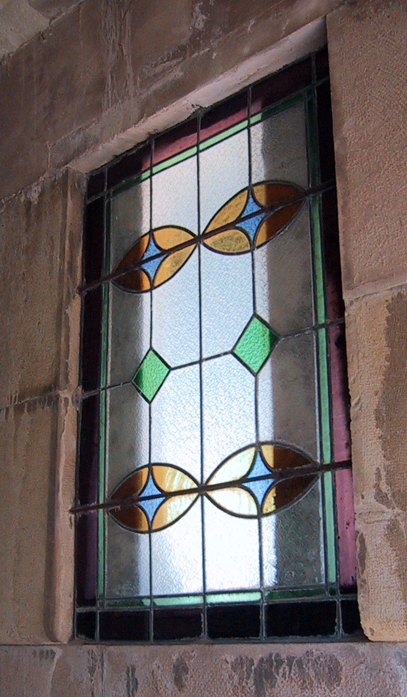
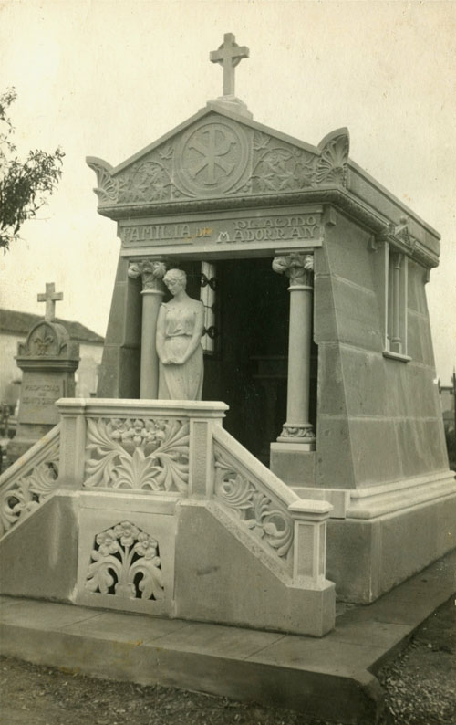

Este panteón es uno de los más interesantes del cementerio de La Planilla y el más complejo en cuanto a decoración. El terreno para su construcción fue concedido el 9 de febrero de 1919 y las obras debieron realizarse de manera inmediata. Su comitente fue Plácido Madorrán Ruiz, labrador colono y posteriormente industrial, representante, comisionista en frutas y representante. Casado con Juliana Arnedo Garrido, fue padre de cinco hijos: José María, Florentino, Carmen, Pedro y Pilar. Sus hijos varones ampliaron el negocio familiar. Florentino fue comisionista y fundó una empresa de transportes rápidos. Pedro contrajo matrimonio con una hija del conservero Julián Llorente Oliván y, a la muerte de éste, se hizo cargo de la fábrica. José María terminó su formación a partir de 1902 en el comercio de Mr. Brusel en Bayona y, a su regreso, abrió un negocio de comestibles (Ultramarinos Finos Casa Madorrán) en la Plaza del Raso, fue concejal (1918-1921) y alcalde de Calahorra (1919-1920). Junto a su cuñado Hipólito Gil Martínez, fundó en 1925 la empresa General de Industria y Comercio, con domicilio social en Calahorra y dedicada a la representación y depósito de mercancías[1].
El panteón, situado cerca de la actual puerta de acceso al recinto, está realizado enteramente en piedra y es una pequeña capilla exenta de planta rectangular con muros en talud sobre basamento. Los muros son lisos por la parte exterior y presentan una moldura en cuarto de bocel al interior, que se refleja en la fachada principal. Ésta presenta acceso elevado y precedido de una pequeña escalera imperial con pretil de piedra calada entre pilas cuadradas cajeadas. La placa central presenta un pequeño ramo de azucenas abiertas en abanico entre hojas palmeadas; las placas laterales, simétricas, muestran hojas palmeadas curvadas en círculos.

El vano de ingreso al panteón es adintelado y está flanqueado por sendas columnas de capitel con hojas de castaño de indias. Las columnas soportan un friso de textura rugosa con la inscripción “Familia de Placido Madorran” y por encima corre una cornisa vegetal sobre la que carga un frontón recto con acróteras en los vértices. El tímpano, de textura granulada, se decora con un crismón entre ramas y hojas de plátano o arce muy sinuosas. Remata el conjunto una cruz latina. El vano de acceso está cerrado con una reja plateada.
Al exterior, los muros laterales son macizos y lisos, culminando con una pequeña moldura sobre la que apea la cornisa y un potente friso que marca el arranque de la cubierta a doble vertiente. Están perforados por sendos vanos flanqueados por columnillas que soportan un frontón recto con una cabecita masculina, barbada y largos cabellos en el centro. Los vanos cierran con sendas vidrieras emplomadas y coloreadas de diseño geométrico.

Interiormente, el panteón es un espacio único rectangular de muros lisos y macizos recorridos por una moldura en cuarto de bocel en los muros laterales, a la altura del arranque de los vanos. El pavimento es de baldosa, con pequeños cuadrados blancos y negros dispuestos en damero. Carece de cubierta por lo que se advierte la estructura del tejado, con una solera lisa de madera y pequeños pares metálicos sobre los que se han dispuesto las placas de piedra lisa revocadas con yeso. En el testero se encuentra la mesa de altar, realizada en piedra y sustentada por dos columnas de capitel vegetal. Sobre la mesa de altar se sitúa un lienzo del Juicio Final realizado por José María Madorrán Bea en 1957 y firmado \\\"José Maria 57\\\".
Una fotografía antigua permite conocer su estado original. En un principio, la capilla permanecía completamente abierta y practicable y la placa de acceso a la cripta estaba decorada con nomeolvides entre hojas. Ante la puerta del panteón destaca la presencia de una escultura de bulto redondo a tamaño natural de una mujer joven meditabunda con las manos unidas en el regazo en actitud de espera. Puede tratarse de una alegoría del alma abandonando el cuerpo, una representación del dolor, una reflexión acerca de la vida y la muerte una representación angélica en forma de mujer sensual peinada y vestida a la moda, un ángel sin alas. Esta hipótesis está avalada por la tradición oral repetida por una parte de la familia según la cual era un ángel que, al no ser colocado en el panteón, fue mutilado perdiendo las alas[2]. Sin embargo, la fotografía demuestra que la imagen fue colocada en su lugar aunque debió ser retirada con rapidez.

El panteón de Plácido Madorrán resulta interesante no sólo por esta imagen sino también por el propio sepulcro. Adopta la estructura de un templo griego in antis pero asociada a un lenguaje arquitectónico en absoluto clásico. Parece inspirado en el panteón de Miguel Buxeda en el cementerio de Montjüic en Barcelona.
Se desconoce el autor de este proyecto pero por la calidad, el detalle decorativo e incluso la concepción del panteón, es posible su relación con talleres zaragozanos.
[1] AMC.Cod. 2.1.4.13. Sig. 441/3 (padrón de 1892), fol. 7 (calle Coliceo nº 3). Sig. 442/1 (padrón de 1897), fol. 7 (calle Coliceo nº 3). Sig. 442/3 (padrón de 1901), s/f. Calle Coliceo nº 9. Sig. 444/2 (padrón de 1924-1925), fol. 4 y 6 (Plaza del Raso nº 13, José María y Florentino Madorrán, y calle Coliceo nº 13, Plácido Madorrán). Libro de Actas municipales. Del 5 de mayo de 1918 al 30 de marzo de 1919. Sig. 147/1, fol. 83v-84. Libro de Actas Municipales. 1918-1919. Sig. 147/1, fol. 64. Libro de Actas Municipales. 1919-1921. Sig. 147/2, fols. 59, 75v y 96v. Anuario de la Vida Oficial, el comercio y la industria de la Provincia de Logroño, pp. 139-140. Guía de La Rioja, pp. 1060-1061. Guía Regional: Aragón, Cataluña, Navarra, Rioja y provincias vascongadas, pp. 819-820. MARAÑÓN, A. El indicador de la provincia de Logroño, p. 97. La Rioja, 5 de noviembre de 1902, p. 2. Vida Calahorrana, 22 de enero de 1928, p. 3. Eco Riojano, 29 de octubre de 1910. LÓPEZ RODRÍGUEZ, Calahorra Levítica y Liberal. Cambio socioeconómico y caciquismo liberal en La Rioja Baja 1890-1923, pp. 97, 100-101. CASTAÑEDA BRACHO, M.T. y CRISTÓBAL FERNÁNDEZ, E. “La autoridad municipal en la ciudad de Calahorra. Listado de Corregidores y Alcaldes. Siglos XIX y XX”, p. 400. SOLANO ANTOÑANZAS, J.M. Calahorra industrial, p. 47.
[2] Este es el relato de Pedro Madorrán Herguera, descendiente de José María Madorrán Arnedo, según la cual la escultura nunca llegó a colocarse en el panteón y se eliminaron las alas para colocarlo en un huerto de la familia. Según los descendientes de Carmen Madorrán Arnedo, la imagen representaba a una mujer con traje de noche muy escotado que parecía abandonar un baile o fiesta arrastrando un chal. La escultura fue considerada inapropiada para este sagrado lugar y llevó a ser tildada de impúdica por mostrar con demasiada claridad sus atributos femeninos. Nadie recuerda cuándo fue retirada ni quién lo solicitó. Pudo tratarse de una decisión familiar o de presiones sociales e incluso religiosas.